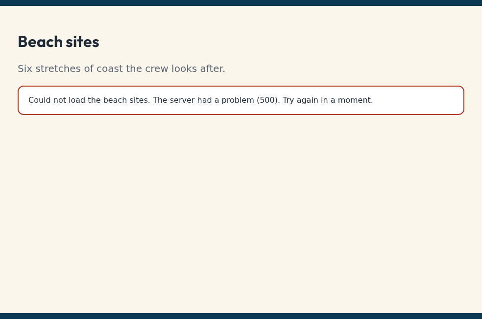

Session 10: Effects and Fetching
How to open Part 2 of React + TypeScript: Build a Modern Web App and teach Lesson 4.1: welcome newcomers and returning learners, make every machine ready (with the catch-up code lesson-13-start for anyone starting here), refresh the Part 1 ideas the lesson leans on, then useEffect with its cleanup and dependencies, Strict Mode, typed fetching with loading, error and empty states, and canceling with an AbortController.
How to Use This Guide
- Same rhythm as Part 1: frame (one mental model) → live demo (you type, they follow) → guided lab (a kit lab: new practice, never the lesson's own project) → start the lesson's project. The project's remaining steps, the exercises, the quiz and the journal go home.
- Type, do not paste. Every command below was run to produce the output under it, in a learner's terminal (Node 24), on a copy of shoreline-hq exactly as a learner has it during and after Lesson 4.1, against a private copy of the API. Where the lesson shows the same command, the kit's output IS the lesson's card, word for word (the generator stops otherwise). Times, thread counts and hashes differ on every machine.
- This is the first session of Part 2. Part 2 can run as its own block, so the session opens with a welcome, the Session 1 environment check on every machine and a Part 1 refresher (40 minutes), then teaches Lesson 4.1 (155 minutes for a learner alone; the room has 120 of them). The Starting with Part 2 page below says what a newcomer needs: the catch-up code is
lesson-13-start, no install beyond Node and VS Code. - Keep
lesson_13.htmlopen in a tab: its tables (when an effect runs, two errors two messages) and screenshots are your slides' backup. Labs live inlabs/module-10/;starter/folders andTASKS.mdare handouts,solution/folders stay with you. - Teal blocks are hands-on, amber blocks are watch-outs. Lesson codes match the course site.
Some learners finished Part 1 last week; some are new, starting here with Part 2; some return after a gap with half-finished code. If every machine is fixed in front of the room, Lesson 4.1 starts at 1:30. Before: a week ahead, send the Starting with Part 2 page (in the workbook's Start Here) to newcomers and returners, and ask everyone to reply with the environment check's last line. In the room: the check gets 12 minutes; a machine that is NOT READY gets a ready partner and the catch-up code, not your attention, while the room does the refresher (it needs no laptop). After: a learner whose own Part 1 code does not build switches to lesson-13-start for good: Part 2 assumes the course's code, file for file.
Before the Session
- ☐ A week before: email the Starting with Part 2 page (workbook, Start Here) to every learner. Newcomers install Node LTS (24 or newer) and VS Code, unzip
lesson-13-start.zipinto a course foldershoreline, copy the kit'slabs/folder into it, runnpm ciinshoreline-hqand the check (node labs/module-10/l4_0-starting-part-2/check_environment.mjsfromshoreline, with the API running). Returning learners run the same check on their own folder. Ask for the last line. - ☐ Files to hand out (shared folder or USB stick): the
labs/folder without thesolution/folders;lesson-13-start.zip(the catch-up code: Part 1 finished),shoreline-api.zipandlesson-13-end.zip(the finished Lesson 4.1, for anyone who falls far behind). Runnpm cionce inlesson-13-start/shoreline-hqandnpm installin each lab'sstarter/at home so your npm cache can serve a slow venue network. - ☐ Run the kit check once:
python3 labs/check_labs.py module-10from this kit's folder (11 runs, under a minute): the refresher and Lab 4.1 starters fail as shipped and their solutions pass tests and the type check; the environment check says READY on the catch-up code, which also builds (npm run build) and type-checks (ts-lab). It starts its own private copy of the API. Then run the environment check on the projector machine. - ☐ Projector machine: shoreline-hq at the START of Lesson 4.1 (your own Part 1 code or
lesson-13-start, with.env.local), VS Code at a large font, two terminals ("api" runningnode server.ts, "hq" inshoreline-hq), the browser with http://localhost:5173 and DevTools docked at the bottom (Console and Network › Fetch/XHR). Have a third terminal command ready:node server.ts --latency=4000(Step 3 and the second demo). - ☐ Board, before learners arrive: the radio check-in (plan on the board = render · radio check-in = effect · "signing off" = cleanup); the dependency table (
[]once ·[x]when x changes · none: after every render); the three states as a diagram (loading → ready | failed); the triage line from Session 1 ("not recognized = new terminal · nothing at :4000 = start the API · Could not read package.json = wrong folder"). - ☐ Print or share: the workbook (Start Here has the catch-up checklist and the refresher), sticky notes for the exit ticket.
| Symptom | Cause | Fix |
|---|---|---|
lesson-13-start/lesson-13-start or no shoreline-hq found | The unzip tool added a folder level, or the check ran from the wrong folder | The course folder holds shoreline-api, shoreline-hq, ts-lab and labs directly; cd into it. |
VITE_API_URL is not set: copy .env.example to .env.local | .env.local was not created (it is never in a zip) | In shoreline-hq: copy .env.example to .env.local, then restart npm run dev. |
shoreline-hq has no packages yet | npm ci not run after unzipping | cd shoreline-hq, npm ci. |
node server.ts: ERR_UNKNOWN_FILE_EXTENSION | Node older than 24 first on the PATH | Install the current LTS, open a NEW terminal (Session 1's traps table). |
| Every request shows twice in the Network tab | Strict Mode in development (not a bug) | The lesson's point: the first one is canceled; the preview shows one. |
The page says Could not reach the server | shoreline-api is not running, or .env.local points elsewhere | Terminal 1: node server.ts; check .env.local. |
Session 10 Agenda (3 hours)
| Clock | Minutes | Segment | What happens |
|---|---|---|---|
| 0:00 | 20 | Welcome to Part 2 and the environment check | Who is new, how Part 2 runs, two terminals, check_environment.mjs READY on every machine; newcomers on the catch-up code (lesson-13-start). |
| 0:20 | 20 | Part 1 refresher | Six retrieval questions on the Part 1 ideas Lesson 4.1 leans on, and one compiler message from ts-lab. |
| 0:40 | 10 | 4.1 Frame and mental model | The radio check-in: plan first (render), then the radio (the effect), always sign off (the cleanup). |
| 0:50 | 20 | 4.1 Live demo: effects and dependencies | TideClock, Strict Mode's start, clean up, start, the async effect tsc refuses, the missing dependency and the missing array. |
| 1:10 | 10 | Break | Restart the projector's API with --latency=4000 for the next demo. |
| 1:20 | 15 | 4.1 Live demo: fetching that holds up | fetch resolves on a 500, LoadState<T>, two errors and two messages, the AbortController, setState at the top of an effect. |
| 1:35 | 30 | 4.1 Guided lab | labs/module-10/l4_1-effects-and-fetching/starter: Tasks 1 and 2 in pairs (a cleanup, a fetch that checks, a race). |
| 2:05 | 45 | 4.1 Start the lesson project | Steps 1 to 3 together: the client, LoadStatus, the sites page with the API slow, failing and stopped. Steps 4 to 6 go home. |
| 2:50 | 10 | Wrap-up | Exit ticket (3 questions), homework, bring list for Session 11. |
| Total | 180 | Ends at 3:00. |
In the room. The lesson page estimates 155 minutes for a learner working alone; after the 40-minute Part 2 opening, the break and the wrap-up, the room has 120. The frame and two short demos cover the ideas (effects, dependencies, Strict Mode, async, the states, canceling), the guided lab practices them on new material, and the project starts with its three most instructive steps: the client that knows about errors and pages, LoadStatus, and the sites page under a slow, failing and stopped API.
Goes home (about 2 to 3 hours). The lesson project's Steps 4 to 6 (the events page with Promise.all, the home page's next cleanup, deleting src/data and letting tsc list the files that used it) and the completion checklist; Exercises 1 and 2 (Try again, the tab title) and the stretch if wanted; the Quick Quiz; the journal entry; Lab 4.1 Task 3 and anything unfinished; the Part 1 refresher lab for anyone who missed two or more refresher questions; newcomers finish the catch-up checklist. Session 11 starts from the finished Lesson 4.1 code (lesson-14-start).
Protect, in this order: every machine's check result (nobody leaves without READY or a plan); the async TS2345 and the missing dependency (the two errors every learner will meet this week); the AbortController step; Step 3 with the slow and failing API. Cut first: the no-array demo (say the number: 700 requests in two seconds), then the set-state-in-effect step (it is in Common Mistakes), then Step 2 typed live (hand out LoadStatus from the lesson and move on).
Starting with Part 2: the Catch-up Page
Part 2 assumes Shoreline Crew HQ exactly as Part 1 leaves it (the end of Lesson 3.6). Everyone runs the same environment check; a newcomer, or a learner whose own code does not build, uses the course's catch-up code instead of their own. The steps are the workbook's Start Here page and labs/module-10/l4_0-starting-part-2/TASKS.md (part A). There is no back end to install: the API is a download that runs with node server.ts.
- Install Node.js LTS (24 or newer) and VS Code; open a NEW terminal:
node -vstarts withv24or higher. - Download
lesson-13-start.zip(Lesson 4.1's "Code for this lesson"), unzip it, rename the folderlesson-13-starttoshorelineand put it outside OneDrive, iCloud or Dropbox. Copy the kit'slabs/folder into it. - In
shoreline/shoreline-hq: copy.env.exampleto.env.local, thennpm ci(the exact versions in package-lock.json). - Terminal 1:
cd shoreline-api,node server.ts. Terminal 2, inshoreline:node labs/module-10/l4_0-starting-part-2/check_environment.mjs(Session 1's check, copied unchanged into this session's labs). - In
shoreline-hq:npm run buildends with "built in". Optional:npm run checkints-lab(the Module 2 workbench) is silent.
The kit checker ran exactly these steps on the catch-up code (a copy of downloads/lesson-13-start with its packages installed from its lockfiles, .env.local copied from .env.example, a private copy of the API). The check:
Environment check for React + TypeScript: Build a Modern Web App Course folder: shoreline OK Node.js v24.22.2 (24 or newer) OK npm 11.19.1 OK VS Code 1.146.0 OK shoreline-api is in the course folder OK shoreline-hq: React 19.3.1, TypeScript 7.0.2, Vite 8.3.8, oxlint 1.93.0 OK the API answers at http://localhost:4000/api: "Many hands, cleaner sands.", 15 public cleanups OK tsc -b: no type errors OK oxlint (npm run lint): Found 0 warnings and 0 errors. OK the dev server starts (npm run dev) and serves the app READY for React + TypeScript: Build a Modern Web App
and the build ends:
✓ built in …ms
On a learner's machine the versions differ, and without VS Code's code command that line is a CHECK and the verdict READY WITH NOTES (fine). The ts-lab check prints nothing after its two > lines.
| Part 1 idea | Where | Where 4.1 uses it |
|---|---|---|
Running versus checking (npx tsc -b, npm run build, npm run lint) | Lessons 1.1, 1.2 | every demo's two commands |
Unions, narrowing, discriminated unions on kind (LoadState) | Lesson 2.2 | LoadState<T>, narrowing after kind !== 'ready' |
Generics (first<T>, Page<T>) and Promise<T> | Lesson 2.3 | getSites(): Promise<Site[]>, readPage<T> |
unknown, type predicates, the typed client (isCleanupEvent, getJSON<T>), .env.local | Lesson 2.4 | client.ts grows isSite, ApiError, readPage |
| Components, props, lists with keys, conditional rendering | Lessons 3.1 to 3.3 | every page |
useState, events, derived values, the Rules of Hooks | Lesson 3.4 | the effects, the early return after all Hooks |
Forms with actions (useActionState), CSS Modules, accessible status lines | Lessons 3.5, 3.6 | NewEventForm, LoadStatus (role status / alert) |
A newcomer who has written React with JavaScript but never TypeScript should read Lessons 2.2 to 2.4 before Session 11 (the refresher's R1 to R3 show the gap), and do the Part 1 refresher lab (part B of the same task sheet).
NOT READY on a newcomer's machine? Same triage as Session 1 (the FIX lines say what to do). Two minutes per machine, then a ready partner: Lesson 4.1's frame and demos need only eyes, and the guided lab can be done in pairs.
Opening Segment
Welcome to Part 2, Environment Check and Refresher
40 min| 6m | Welcome, introductions for newcomers, how Part 2 runs (Sessions 10 to 17: data, state and routing; the Part 2 project in Session 16; assessment in Session 17) |
| 14m | Environment check on every machine: node labs/module-10/l4_0-starting-part-2/check_environment.mjs; NOT READY gets a partner and the catch-up code |
| 14m | Part 1 refresher: R1 to R6 (workbook, Start Here), fingers up, tally |
| 6m | One compiler message read together (R1, real output from ts-lab), and how it leads into today |
- Welcome (6m). For the newcomers: one minute on the course (Shoreline Crew HQ, a volunteer beach-cleanup app built in React with TypeScript; shoreline-api is the server it talks to). Then Part 2's arc on the board: "Part 1 drew screens from data we pasted in. Part 2 connects the app to its server: fetching (today), your own Hooks and the DOM (Session 11), Suspense and reducers (12), typed context and sign-in (13), patterns (14), the router (15, 16), then the Part 2 project and assessment." Returning learners: "what did you build last time?" (one answer: the accessible, styled HQ of Lesson 3.6).
- Environment check (14m). Same as Session 1: terminal 1 runs the API, terminal 2 in the course folder runs
node labs/module-10/l4_0-starting-part-2/check_environment.mjs. READY (or READY WITH NOTES) = helper. NOT READY: Node too old or missing (a new terminal fixes half of them), no.env.local(it is not a check item butnpm run devwill say so), no packages (npm ci), own code that failstsc -b(switch tolesson-13-startnow; their own code can come back later). Write the names of anyone still NOT READY on a sticky note. - Refresher (14m). Say: "Six questions on the Part 1 ideas today's lesson builds on. Not a test." Learners answer R1 to R6 in the workbook (about five minutes), then fingers for A to D as you reveal each. Tally the misses per question.
- One compiler message (6m). Show R1's real output (below) and read it top down: file:line:col, the code, the message, the follow-up line naming the member that has no
events. "Today's LoadState is this union, made generic: one type for sites, cleanups, anything."
npm run check
> ts-lab@1.0.0 check
> tsc --noEmit
refresher.ts:4:16 - error TS2339: Property 'events' does not exist on type 'LoadState'.
Property 'events' does not exist on type '{ kind: "loading"; }'.
4 return state.events.length
~~~~~~
Found 1 error in refresher.ts:4The second line names the member TypeScript tried: { kind: "loading"; } has no events. Narrow first (if (state.kind !== 'ready') return 0), and below that line state.events is CleanupEvent[].
Answers: R1 A; R2 A; R3 A; R4 B; R5 C; R6 B.
- R1 to R3 (TypeScript: narrowing, empty state, unknown data) predict how today's types land. Two or more misses on R1: spend an extra minute on the LoadState slide; on R3: re-read client.ts's
isCleanupEventtogether before Step 1. - R4 and R5 (Rules of Hooks, derived values) predict the events page's early return (after all Hooks) and the "you might not need an effect" table.
- R6 (status and alert) is LoadStatus in one question; a miss is fine, Step 2 answers it.
- Three or more wrong: pair them with a strong neighbor for the lab, and send them home with part B of
labs/module-10/l4_0-starting-part-2/TASKS.md(two refresher tasks: a type predicate and a Record, a component with state and a derived count).
- Do not re-teach Part 1. Ten minutes of refresher is a diagnosis, not a lesson. The table in the catch-up page says where each idea lives.
- Newcomers who know React but not TypeScript will be fine with effects and lost in
Promise<T>and type predicates: point them at Lesson 2.4 for homework, and pair them with a Part 1 graduate. - Own code versus catch-up code. A learner whose Part 1 code differs from the course's (other file names, extra features) will fight every diff in Part 2. Recommend
lesson-13-start; they can port their extras later.
Lesson Plan
Effects and Fetching
120 min- Explain what a side effect is, why it does not belong in rendering, and when you do not need an effect at all
- Write useEffect with the right dependency array and a cleanup function, and explain why Strict Mode runs effects twice in development
- Fetch typed data in an effect, reading Promise<T>, Response and AbortSignal in TypeScript's messages
- Model loading, error and ready states with a generic discriminated union, and turn API errors into messages people understand
- Cancel requests with AbortController, and practice slow and failing answers with the API's --latency and ?_status switches
| 10m | Frame: side effects, the radio check-in, the three parts of useEffect, "you might not need an effect" |
| 20m | Live demo A: TideClock, Strict Mode, the async TS2345, the missing dependency, no array |
| 15m | Live demo B (after the break): fetch on a 500, LoadState<T>, two errors, the AbortController, set-state-in-effect |
| 30m | Guided lab: l4_1-effects-and-fetching/starter, Tasks 1 and 2 in pairs |
| 45m | Start the lesson project: Steps 1 to 3 together, the sites page under three API switches |
From the lesson, while you draw it: "A cleanup crew posts its plan on the board first: who is where, which beach. That is rendering, a description of what should be. Once the plan is up, the lead picks up the radio and checks in with the harbor office: that is the effect, talking to something outside the crew. And when the crew packs up, the lead radios 'signing off', so the office stops expecting calls: that is the cleanup. Plan first, then the radio, and always sign off."
Then the rule that makes it work: "Since Lesson 3.1 every component has been pure: same props and state, same elements, nothing else changed. React may call it whenever and as often as it likes. Anything that touches the world outside (a server, a timer, the tab title, a window event) is a side effect, and it gets its own place: an effect, run after the screen is updated." Draw the loop from the lesson: render → screen → effect → setState → render, with the cleanup when the component goes away.
Last, the question to ask before every effect (the lesson's table): is there an outside system? A value worked out from state is a calculation; a click is a handler; only keeping something outside React in step needs an effect. Loading a page's data is the classic one.
In shoreline-hq at the start of the lesson (your Part 1 code or lesson-13-start), with src/Scratch.tsx as the experiment file. The outputs below come from the same files in a copy of the app as a learner has it; ask for a prediction before every run.
- A clock that needs an effect (4m). In shoreline-hq, create
src/Scratch.tsx(the lesson's experiment file) and show it by makingreturn <TideClock />the first line ofCurrentPagein App.tsx. Type it, reading the three parts aloud: the effect function, what it returns (the cleanup), the array.import { useEffect, useState } from 'react' export function TideClock() { const [now, setNow] = useState(() => new Date()) useEffect(() => { // Start a timer when the clock appears on the screen... const timer = setInterval(() => setNow(new Date()), 1000) // ...and stop it when the clock goes away return () => clearInterval(timer) }, []) return <p>Crew time: {now.toLocaleTimeString('en-US')}</p> }
HoveruseEffect: the first parameter isEffectCallback, a function that returnsvoid | Destructor. Remember that type: it comes back in three minutes.useState(() => new Date())passes a function sonew Date()runs once. - Start, clean up, start (3m). Swap in the lesson's
EffectLog, open the console (F12, or Cmd+Option+J), reload. Ask first: "how many lines?"import { useEffect } from 'react' export function EffectLog() { useEffect(() => { console.log('effect: start') return () => console.log('effect: clean up') }, []) return <p>Open the console.</p> }
effect: start effect: clean up effect: start
That is the lesson's own console capture.<StrictMode>(main.tsx since Lesson 1.2) mounts, unmounts and mounts again in development only, to prove the cleanup undoes the effect. The build runs it once. Never remove StrictMode to hide it; fix the cleanup. - The async effect tsc refuses (4m). "Let us fetch with await." Type the lesson's SiteNames with
useEffect(async () => …). Predict, then:npx tsc -b
src/Scratch.tsx:8:13 - error TS2345: Argument of type '() => Promise<void>' is not assignable to parameter of type 'EffectCallback'. Type 'Promise<void>' is not assignable to type 'void | Destructor'. 8 useEffect(async () => { ~~~~~~~~~~~~~ Found 1 error in src/Scratch.tsx:8Read it as the lesson does: an async function returns a promise; an effect may return only nothing or a cleanup (void | Destructor). oxlint addsEffect callbacks are synchronous to prevent race conditions.(two warnings on the same file in the kit's run). Then the fix: anasync function load()inside the effect, called at once (npx tsc -bis silent), or.then, which the project uses. - The dependency the array forgets (5m). Type the lesson's
SiteEventCount(siteIdread in the effect, array[]). Ask: "when the parent passes Long Strand instead of Pelican Point, what runs?" Then:npm run lint
> shoreline-hq@0.0.0 lint > oxlint ⚠ react-hooks(exhaustive-deps): React Hook useEffect has a missing dependency: 'siteId' ╭─[src/Scratch.tsx:13:6] 11 │ useEffect(() => { 12 │ getEvents(`siteId=${siteId}`).then((found) => setCount(found.page.total)) · ───┬── · ╰── useEffect uses `siteId` here 13 │ }, []) · ── 14 │ ╰──── help: Either include it or remove the dependency array. Found 1 warning and 0 errors. Finished in …ms on 31 files with 150 rules using … threads.tsc is silent; the linter'sreact-hooks(exhaustive-deps)reads the effect more carefully than a tired human. Your code chooses the dependencies:[siteId]. Draw the table:[]once,[siteId]when it changes, nothing at all after every render. - No array at all (4m). Remove the second argument from SiteNames' effect and run both tools:
npx tsc -b && npm run lint
> shoreline-hq@0.0.0 lint > oxlint Found 0 warnings and 0 errors. Finished in …ms on 31 files with 150 rules using … threads.
Both quiet. In the browser the page looks fine ("6 sites") and the Network tab fills up: the lesson measured more than 700 requests in two seconds. Every effect gets an array, even[]. Deletesrc/Scratch.tsxand the line inCurrentPagebefore the break.
Restart the projector's API slow during the break (node server.ts --latency=4000) only if you will show Step 3 straight away; otherwise keep it normal. The code below is the finished Lesson 4.1 code (stage files, checked by the kit like the lesson's own blocks).
- fetch resolves on a 500 (3m). In the browser's console on the HQ's dev server page, the lesson's snippet. Predict: does it throw?
const response = await fetch('http://localhost:4000/api/events?_status=500') response.ok response.status await response.json()
The API answers like this (the kit asked it directly): -
HTTP/1.1 500 Internal Server Error content-type: application/json; charset=utf-8 { "error": "server_error", "message": "Simulated 500 response (the _status parameter)." }okfalse,status500, the body is the API's error object. fetch rejects only when NO answer arrives (TypeError: Failed to fetch).?_status=500is one of the API's practice switches. - LoadState, generic (3m). The Lesson 2.2 union, now for any kind of data (Step 2 creates it):
shoreline-hq/src/utils/loadState.ts
// What a screen that loads data can be doing (the LoadState of Lesson 2.2, for any kind of data) export type LoadState<T> = | { kind: 'loading' } | { kind: 'failed'; message: string } | { kind: 'ready'; data: T }
Onlyreadyhasdata. Afterif (state.kind !== 'ready') return …, below that linestate.datais simply the data. Empty is not a fourth kind: ready with zero items. - Two errors, two messages (3m). Show the lesson's table: the API answered 500 (ApiError, "The server had a problem (500). Try again in a moment.") versus no answer (TypeError, "Could not reach the server. Check that shoreline-api is running, then try again."). Then
describeError:shoreline-hq/src/api/client.ts/** What to tell people when a request failed */ export function describeError(error: unknown): string { if (error instanceof ApiError) { return `The server had a problem (${error.status}). Try again in a moment.` } if (error instanceof TypeError) { return 'Could not reach the server. Check that shoreline-api is running, then try again.' } return 'Something unexpected went wrong. Try again in a moment.' }
instanceofnarrows anunknownerror, which is why the catch annotateserror: unknown(without it the rejection isanyanderror.no.such.thingcompiles). - Cancel what nobody waits for (3m). The sites page's effect, the pattern every page uses today. Walk the race: Pelican Point's slow answer must never overwrite Long Strand's.
shoreline-hq/src/pages/SitesPage.tsx
// After the first render: ask the API for the sites, and cancel the request if the page goes away useEffect(() => { const controller = new AbortController() getSites(controller.signal) .then((sites) => setState({ kind: 'ready', data: sites })) .catch((error: unknown) => { if (controller.signal.aborted) return console.error(error) setState({ kind: 'failed', message: describeError(error) }) }) return () => controller.abort() }, [])
abort()in the cleanup,if (controller.signal.aborted) returnfirst in the catch. On the dev server the Network tab shows two requests (the first canceled by Strict Mode, net::ERR_ABORTED); the preview shows one. - Not at the top of the effect (3m). Someone always tries to start the effect with
setState({ kind: 'loading' })(for Exercise 1's Try again). The linter:npm run lint
⚠ react(set-state-in-effect): Calling setState synchronously within an effect can trigger cascading renders ╭─[src/pages/SitesPage.tsx:16:5] 14 │ 15 │ useEffect(() => { · ────┬──── · ╰── This is the containing effect 16 │ setState({ kind: 'loading' }) · ────┬─── · ╰── Avoid calling setState() directly within an effect 17 │ const controller = new AbortController() ╰──── help: Effects should synchronize React with external systems. Calling setState synchronously inside an effect starts another render and is usually unnecessary. Derive the value during render, initialize state directly, or update it from the event that caused the change. Use an effect only when synchronizing with an external system.Start in the right state; a click that should show Loading again sets it in its handler, together with the attempt number (Exercise 1). Setting state later, in.thenor.catch, is what effects are for: the rule does not mind.
- An empty or missing dependency array "because it works". It works for the first site, or it floods the API. Coach: "Which values from the component does the effect read? Those go in the array, and the linter will list them." (Self-check Q4 and Q11.)
useEffect(async …). Coach with the type: "What may an effect return?void | Destructor. What does an async function return?" Then the async-function-inside fix. (Self-check Q3.)- Showing a canceled request as an error. In the lab's race task learners forget the
abortedcheck and see "Could not load" flash. Coach: "Who canceled it? Then who should hear about it?" (Self-check Q8.)
Folder: labs/module-10/l4_1-effects-and-fetching/starter/ with labs/module-10/l4_1-effects-and-fetching/TASKS.md; your reference is labs/module-10/l4_1-effects-and-fetching/solution/. New practice on the lesson's ideas outside the course app: an effect with a real cleanup (window online/offline listeners), a fetch that checks response.ok, a component that loads per site with LoadState and an AbortController, and LoadState as a discriminated union proved by the type checker. The requests are answered by MSW inside the tests with answers saved from the real API (fixtures/), so the slow answer and the 500 are on purpose and no server is needed. Needs npm install once in starter/ (React, Vitest, MSW).
- Run it as shipped first (3m). On the projector:
npm test(seven failures, several withTODO), thennpm run typecheck: two TS2578 errors, "Unused '@ts-expect-error' directive", which Task 3 resolves. - Task 1 in pairs (8m): ConnectionBadge. Circulate for listeners added in the component body (no effect), anonymous functions that cannot be removed, and a missing
[]. The second test spies onremoveEventListener: it fails until the cleanup removes the SAME functions. - Task 2 (14m): 2a,
if (!response.ok) throw new ApiError(...); 2b, the lesson's effect pattern with[apiUrl, siteId]. The last test is the race: Pelican Point's answer is slow on purpose, the site changes, and it must never replace Long Strand's. Ask the pair who fails it: "what does your cleanup do?" - Expected when Tasks 1 and 2 are done: six of seven tests pass (Task 3 waits). The solution's run ends:
✓ src/lab.test.tsx (7 tests)
✓ Task 1: online, then offline, then online again
✓ Task 1: the cleanup removes every listener the effect added
✓ Task 2a: an answer with status 500 is an ApiError, not data
✓ Task 2b: loading first, then the titles of the site
✓ Task 2b: an empty list and a failure each get their own words
✓ Task 2b: a new site cancels the old request, so the slow old answer never shows
✓ Task 3: the words for each state
Tests 7 passed (7)- Debrief (5m): "Which test proves the cleanup? Which one proves the abort?" (the spy, the race). "Why does the lab never need the API running?" (MSW answers inside the test, with the API's own saved answers).
- Fast finishers: Task 3 (a union that makes both mistakes in the test file errors), then the stretch: Try again with an attempt number (Exercise 1's idea).
The lesson project is The HQ Talks to the API, six steps. In the room (45 minutes, from 2:05), do Steps 1 to 3 together: they hold every idea; Steps 4 to 6 repeat the pattern on three more pages and go home.
- Step 1 (15m): the client. Replace
client.tswith the lesson's version (paste it: it is long, and the new parts are listed under it), thennpx tsc -b. Let tsc find the one caller left over from Lesson 2.4:
src/main.tsx:15:1 - error TS2554: Expected 1-2 arguments, but got 0.
15 getEvents()
~~~~~~~~~
src/api/client.ts:180:27 - An argument for 'query' was not provided.
180 export function getEvents(query: string, signal?: AbortSignal): Promise<Page<CleanupEvent>> {
~~~~~~~~~~~~~
src/main.tsx:17:34 - error TS2339: Property 'length' does not exist on type 'Page<CleanupEvent>'.
17 console.log(`Loaded ${events.length} cleanups. First: ${events[0]?.title ?? 'none'}`)
~~~~~~
src/main.tsx:17:61 - error TS7053: Element implicitly has an 'any' type because expression of type '0' can't be used to index type 'Page<CleanupEvent>'.
Property '0' does not exist on type 'Page<CleanupEvent>'.
17 console.log(`Loaded ${events.length} cleanups. First: ${events[0]?.title ?? 'none'}`)
~~~~~~~~~
Found 3 errors in the same file, starting at: src/main.tsx:15- "Changing what a function takes and returns is a change for everyone who calls it." Remove the temporary log in main.tsx;
npx tsc -bis quiet again. - Step 2 (8m): LoadStatus.
src/utils/loadState.ts,LoadStatus.module.css,LoadStatus.tsx. Ask whystate: LoadState<unknown>accepts aLoadState<Site[]>(the component never reads data). role status for loading, role alert for failure, words plus a red border, never color alone. - Step 3 (20m): the sites page, three ways. Type the effect (the pattern from demo B). /sites looks as before. Then, on the projector and on their machines: stop the API and start it slow (
node server.ts --latency=4000), reload: the loading box. Put?_status=500ingetSites' path temporarily: the error box, details in the console. Put it back, stop the API: "Could not reach the server". Start it again.


- Done in the room = Steps 1 to 3 working, the three states seen. Goes home: Step 4 (the events page:
Promise.alland a tuple, EventCard given its site, tsc listing the caller), Step 5 (the home page's next cleanup and theX-Total-Count), Step 6 (deletesrc/dataand let tsc list the four errors in two files), the checklist. This is the code Session 11 starts from (lesson-14-start).
Ask these out loud during the demos and the lab:
- What is a side effect, and why can it not run during rendering? Answer: anything a function does besides returning its result (a request, a timer, the tab title); rendering may run many times or be thrown away.
- When does an effect with
[siteId]run? Answer: after the first render, and after every render wheresiteIdchanged (the previous run's cleanup first). - Why two requests on the dev server? Answer: Strict Mode starts, cleans up and starts again, in development only; the first request is aborted.
- What does fetch do with a 500? Answer: resolves, with
okfalse; it rejects only when no answer arrives. - Why
if (controller.signal.aborted) returnfirst? Answer: a canceled request is not a failure to show anyone.
Workbook self-check, items Q1 to Q12 (learners do them at home; Q3 and Q4 in the room if time allows).
Answers: Q1 C) Keeping the browser tab's title in step while the sites page is open; Q2 effect: start, effect: clean up, effect: start: Strict Mode mounts, unmounts and mounts again, in development only; Q3 B) Put an async function inside the effect and call it (or use .then); Q4 D) Still Pelican Point's count: the effect never runs again; Q5 A) false 500, then the API's error object; Q6 D) { kind: 'loading' } | { kind: 'failed'; message: string } | { kind: 'ready'; data: Site[] }; Q7 Without the annotation the rejection is any, so anything compiles (error.no.such.thing); unknown forces a check first; Q8 B) A request we canceled is not a failure to show anyone; Q9 One: Strict Mode's start, clean up, start happens in development only; Q10 1 8: one cleanup in the body, the total of 8 in the X-Total-Count header; Q11 C) Both pass; the Network tab fills with hundreds of requests; Q12 A) In the click handler, next to the attempt + 1 that runs the effect again. Full set with explanations in the Answer Key.
Support: learners new to promises (Session 1's diagnostic D4) get one board drawing: "a Promise is an answer that is not here yet; .then runs when it arrives". In the project, hand them the lesson's code for Steps 1 and 2 and let them type only the sites page's effect, reading each line aloud.
Stretch: Lab 4.1 Task 3 and its stretch (Try again); the lesson's Exercise 3 (the "taking a while" timer in LoadStatus) and the Bonus Challenge (six SiteEventCount requests with _delay, arriving in a different order every time, each under the right card).
Closing
Put the three questions on the slide. Learners answer in the workbook's Exit Ticket box or on a sticky note. Before Session 11, sort them: question 2's pile tells you how much of Session 11's warm-up goes to dependencies, which Lesson 4.2's useApi depends on.
- Name the three parts of
useEffect(() => { …; return () => … }, [x])and when each runs. Answer: the effect (after the screen updates), the cleanup (before the next run and when the component goes away), the dependency array (run again when x changed). - An effect reads
siteIdand its array is[]. What goes wrong, and which tool tells you? Answer: it never runs again for a new site, so the page shows the first site's data; oxlint's exhaustive-deps (tsc is silent). - Name the three states a page that loads data can be in, and what the page shows for each. Answer: loading ("Loading …", role status), failed (a message people can act on, role alert), ready (the data; empty is ready with zero items).
- Finish the lesson project: Steps 4 to 6 and the completion checklist (
npx tsc -b,npm run lint,npm run buildpass;src/dataandsrc/Scratch.tsxgone). - Exercises 1 and 2 (Try again with an attempt number; the tab title effect with a cleanup); Exercise 3 is a stretch. Lesson 4.2 turns both into Hooks.
- The Quick Quiz on the lesson page (answers in the Answer Key) and the workbook self-check Q1 to Q12.
- Labs: Lab 4.1 Task 3 (and anything unfinished); the Part 1 refresher (part B of the Starting Part 2 sheet) for anyone who missed two or more refresher questions.
- Journal: the lesson's prompt, and the three messages (loading, failed, empty) for each data screen of your own Lesson 11.1 app idea.
- Newcomers: finish the catch-up checklist and read Lessons 2.2 to 2.4 if TypeScript is new.
- The course folder with Lesson 4.1 finished (or
lesson-14-startfrom the course downloads),.env.localin shoreline-hq, the API starting withnode server.ts. - Session 11 teaches Lessons 4.2 and 4.3: custom Hooks (useApi with Try again, a debounced search, tab titles) and refs (the
/shortcut, a dialog in a portal). It extracts the four copied effects you finished at home, so finish them. - The workbook, and the list of data screens for your own app.
If You Run Long or Short
- Protect: the check result for every machine; the async TS2345 and missing-dependency steps; the AbortController; Step 3's three API switches.
- Cut first (saves 4m): the no-array demo (say the number).
- Cut second (saves 3m): the set-state-in-effect step (point at Common Mistakes).
- Cut third (saves 8m): type Step 2 from the lesson with the room reading along instead of typing; or shorten the lab to Task 1 and 2a, and send 2b's race home.
- Exercise 1 together (Try again): an
attemptin the array, the loading state set in the click handler, tested with the API stopped and started. - Step 4 on the projector:
Promise.alland the tuple[Page<CleanupEvent>, Site[]], thennpx tsc -bnaming EventList as the caller that must passsite. - The FAQ's query-string question live:
?status=finishedanswers 400 with fieldErrors (below), and LoadStatus would show it.
HTTP/1.1 400 Bad Request
content-type: application/json; charset=utf-8
{
"error": "validation_failed",
"message": "Some fields need attention.",
"fieldErrors": {
"status": [
"status must be one of: draft, scheduled, completed, cancelled."
]
}
}